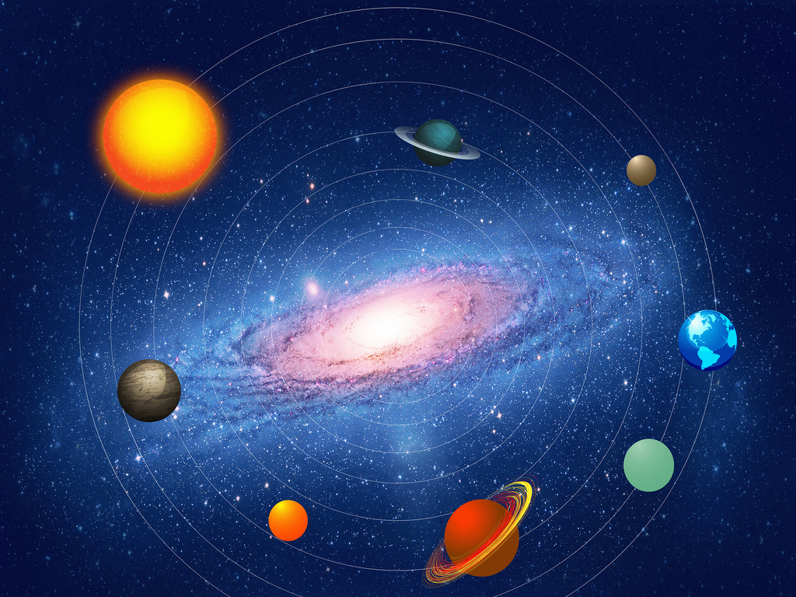
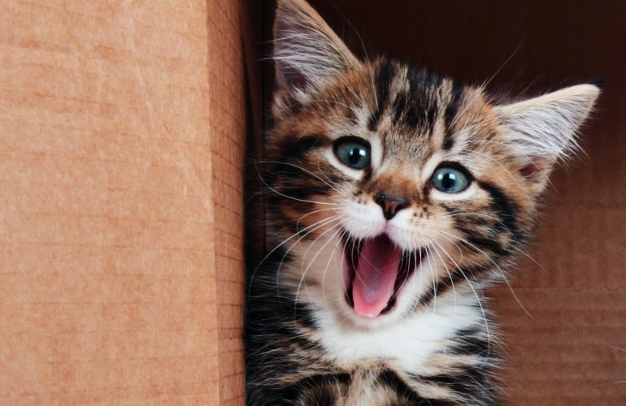
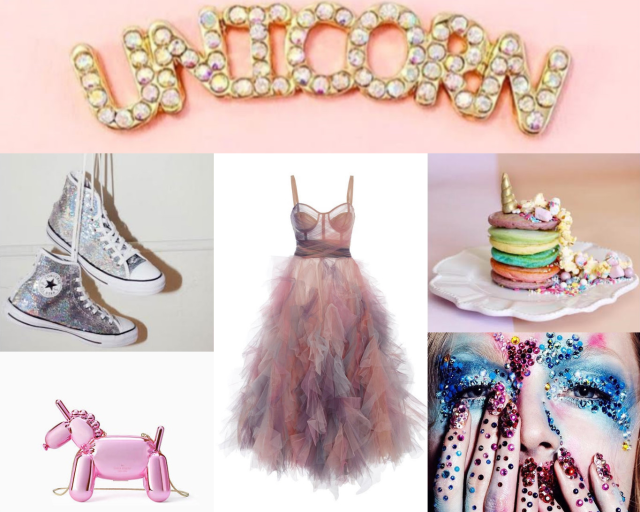

Hi, I'm Nathalia, a Web developer newbie, currently absorbing every bit of knowledge possible from the Le Wagon bootcamp.
|  |
Everything related to the UniverseSpaceships, planets, multiple universes, including fictional ones! I'm a big dreamer when it comes to theories related to life in other planets, or who knows, universes? My passion goes from Star Wars (BIG FAN!) to simply lie down on a random playground (aka in front of my house) to see stars! Do you have a space related theory? Please tell me :) |
|  |
Cats!There's nothing better than get home and find your cat waiting for you, ready to grab your legs and play, or cudle, or do whatever cats do, because everything they do is adorable. Right? right! I have a kitty, his name is Tuco (yes, from Breaking Bad's character Tuco Salamanca) and he's one of my favorite things in the world. |
TravelingDo you know that feeling you have when you're working or just at home, and sunddely you image yourself in a total different place, and it feels like you can't think of anything else? That's what I feel sometimes, when it comes to travel. I haven't seen so much of the world yet, but I'll get there! So far, I can tell you that my favorite city trip was to Edinburgh, in Scotland! Do you also like to travel? Let's talk about it. |
|
|  |
Unicorns and random fashionYou will probably see me wearing some unicorn t-shirts and stuff. Don't be surprised! I like fun and colorful clothing, and accessories too. Let's say my wardrobe says a lot of my personality. But how I dress everyday depends on my mood. Everything different have my attention. I love dresses and skirts, and I guess I'm probably the most girly girl ever! |